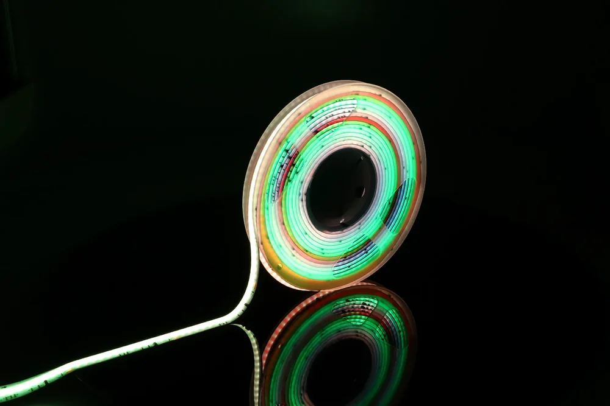

ŚWIATŁO W RUCHU
Premium COB Digital
Adresowalna linia COB do animacji, płynących efektów i sterowania kolejnymi odcinkami światła.
3lata gwarancji
dla serii Premium COB Digital
Skomponuj zestaw w 3D dla serii Premium COB Digital

POZNAJ SERIĘ
Światło do Twojego projektu.
COB Digital łączy równomierną linię świetlną z układami sterującymi IC. Zamiast zmieniać całą taśmę jednocześnie, kompatybilny sterownik może tworzyć efekty w kolejnych adresowalnych sekcjach.
Seria pracuje przy napięciu 24 V. Nadaje się do dekoracji, ekspozycji oraz instalacji z falami i animacjami światła. Sterownik i sposób zasilania dobiera się do konkretnego modelu taśmy oraz długości projektu.
Gdzie się sprawdzi?
Animowane dekoracje, ekspozycje, scenografia i strefy rozrywki.